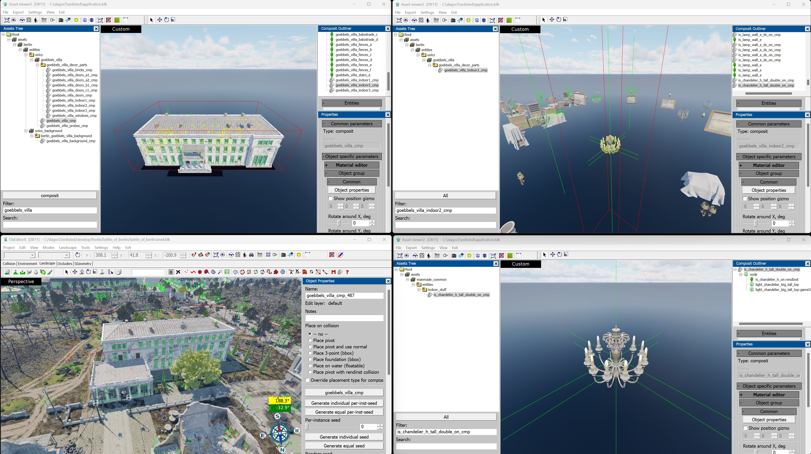
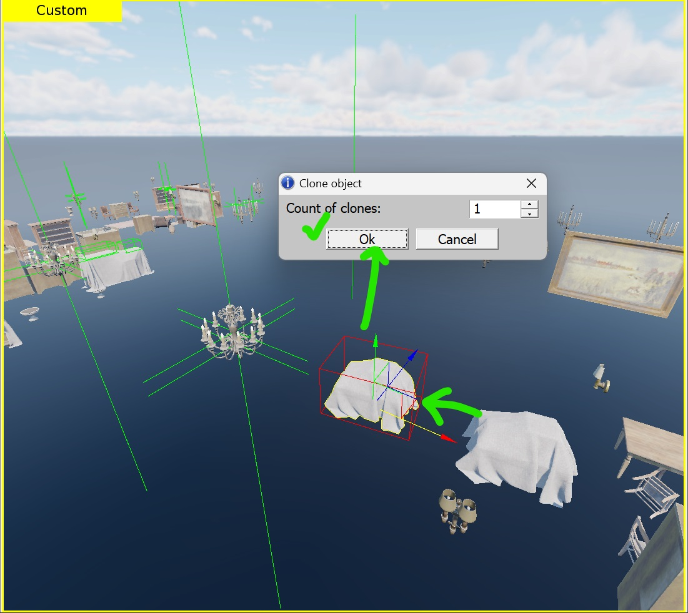
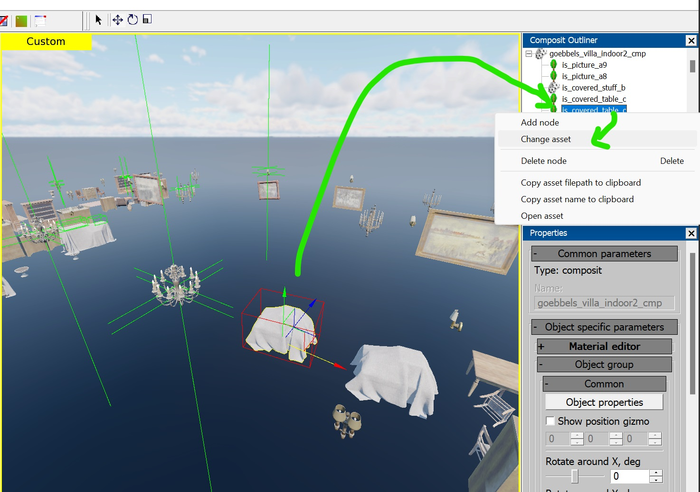
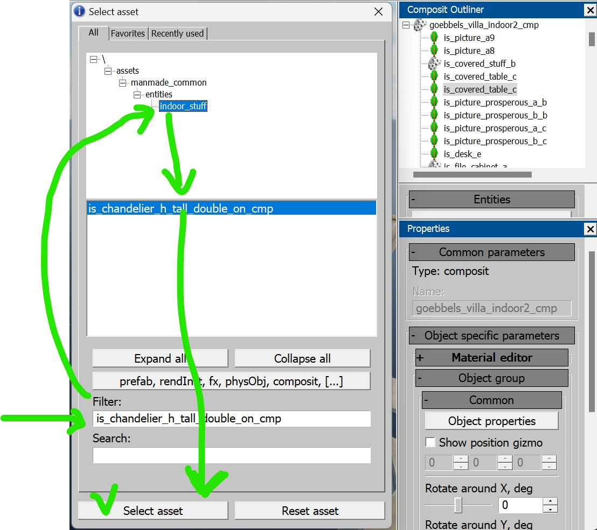
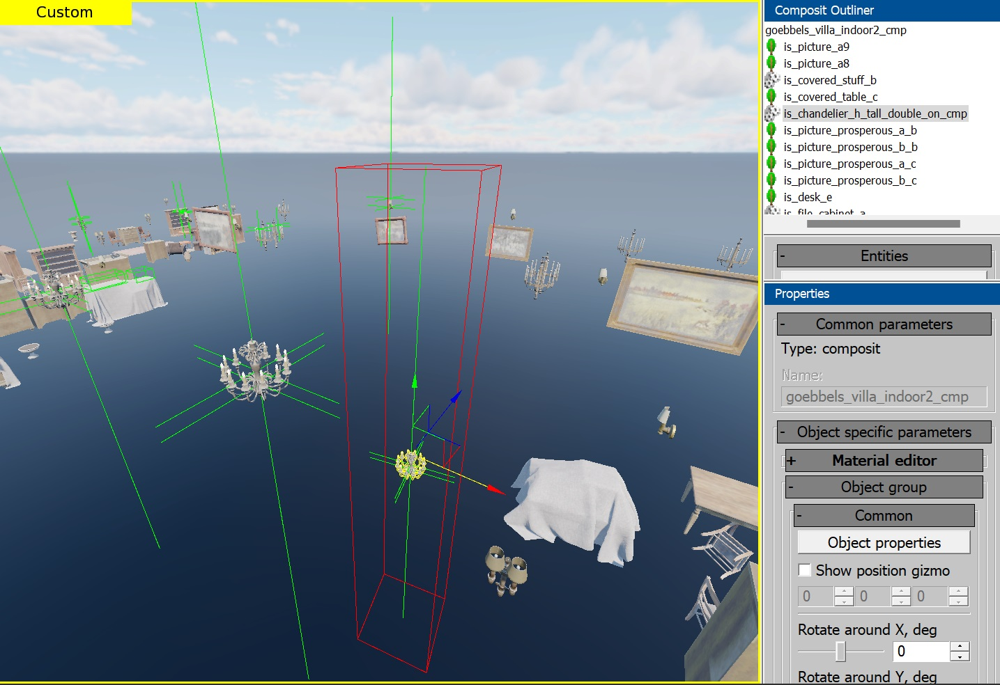
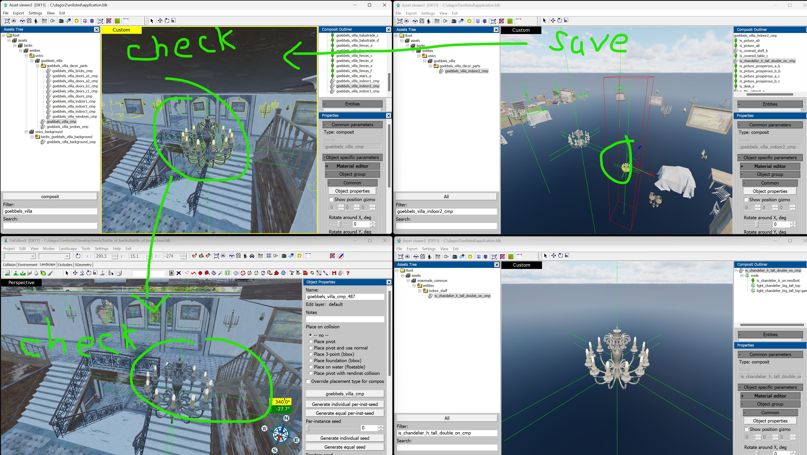
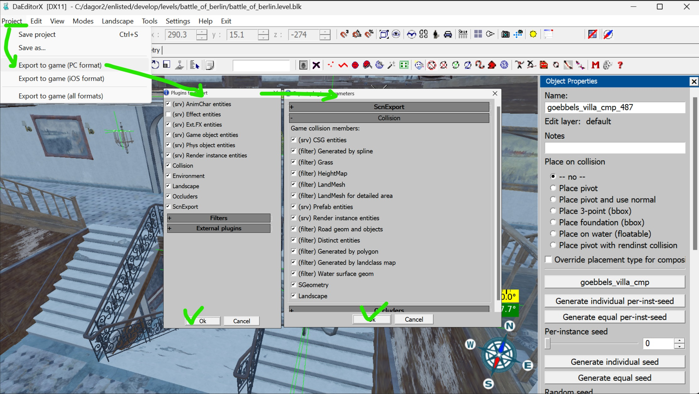

Adding Light Fixtures to Building Composites
Overview
This article explains how to add light fixtures to existing building composites, using the Enlisted project as an example. However, the process is generally applicable to any daNetGame-based projects.
Preparing Workspace
For efficient and streamlined work with large composites, you will need to open three Asset Viewer windows and one daEditor window.
Open daEditor and select the desired map. In this example, it’s the Battle of Berlin.
Locate the building composite you want to modify and copy its name. For this guide, we will use goebbels_villa as the example.
In the first Asset Viewer window, find the composite of the selected building.
In the second Asset Viewer window, open the composite that contains the light fixtures or the one where the lights will be placed.
In the third Asset Viewer window, open the specific light fixture that will be added to the composite.
Your workspace should look something like this:

Adding Light Fixture
The easiest way to add your light fixture is by replacing an existing object within the composite. While not the only method, this approach is currently the fastest, requiring minimal steps. Importantly, it preserves the original composite’s pivot points and avoids the need for manual edits in a text editor.
Select any convenient object within the composite and duplicate it by dragging the pivot arrows while holding down
Shift. In the pop-up window, click OK.
In the Outliner window, select the duplicated asset, right-click on it, and choose Change asset.

In the pop-up window, type the name of the required light fixture in the
Filterfield (e.g.,is_chandelier_h_tall_double_on_cmp). In the ALL tab, navigate to the directory where the light fixture is located. Then, select the asset from the list in the lower window and click Select asset. This will replace the existing object with the desired light fixture.

Adjust the position of the light fixture as needed, then save the composite.
After saving, check the changes in the parent composite using the first Asset Viewer window and the daEditor window.
If any adjustments are needed, make the necessary changes in the appropriate window, save again, and verify the updates in other windows.

Exporting the Map
If everything looks correct, export the map from daEditor by navigating to Project ▸ Export to Game (PC Format). In the following windows, click OK without changing any settings. When prompted, overwrite the existing map by clicking OK in the dialog box.

Finally, launch the game and check for any bugs or issues.